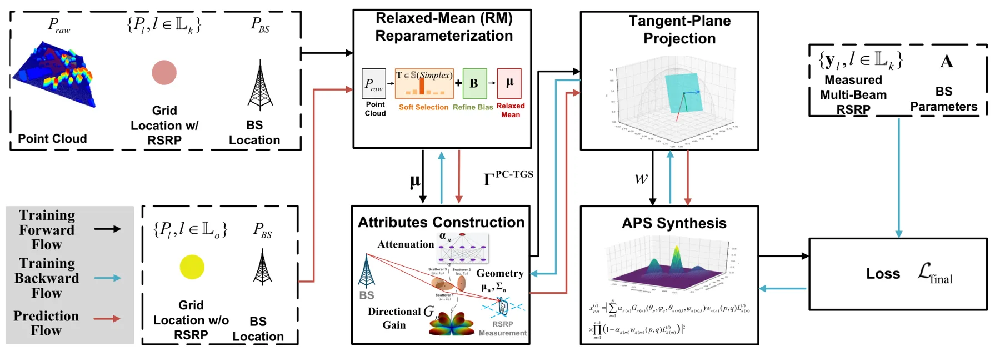
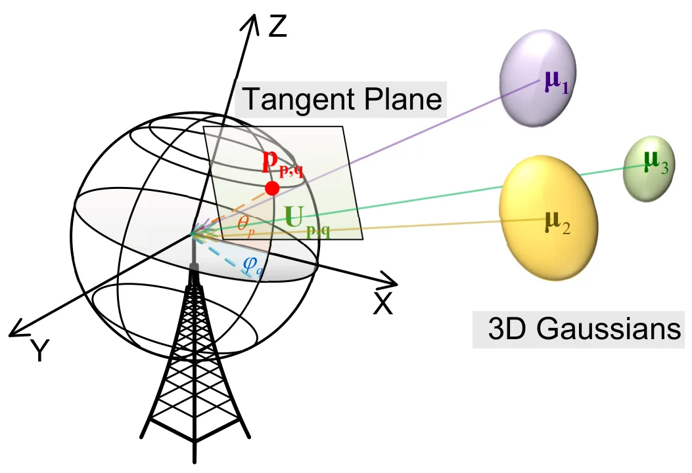

PC-TGS：由点云辅助的切平面 Gaussian Splatting 局部统计信道预测Point-Cloud-Assistant Localized Statistical Channel Prediction by Tangent Gaussian Splatting
不属于 GNSS 定位或 SLAM 后端，但把点云、3DGS、城市几何和多路径传播建模结合起来；对无线数字孪生、NLOS/多路径理解和几何辅助定位有间接价值。
一句话工作总结
PC-TGS 用 LiDAR 点云初始化/优化 3D Gaussians，并把它们投影到局部角域，用于外推未测位置的无线多路径角功率谱。
摘要
面向下一代无线网络优化，站点相关的精确信道信息非常关键。已有 localized statistical channel modeling（LSCM）可由参考信号接收功率（RSRP）测量建模多路径角功率谱（APS），但难以在缺少测量的大量位置外推 APS。本文提出 PC-TGS，把稀疏无线测量与密集 LiDAR 几何结合，用各向异性 3D Gaussians 表达环境散射体，并通过对原始点云的 relaxed-mean reparameterization 初始化和优化。方法用切平面投影把每个 Gaussian 映射到局部角域，再通过深度感知 electromagnetic splatting 聚合贡献；同时推导 APS bin 积分的闭式 Gaussian-weighted average 和误差界。在一个城市级 LiDAR 扫描数据集（5M 点、6310 个 RSRP 样本）上，PC-TGS 在 APS/RSRP 预测和推理速度上优于基线，展示了几何感知、数据高效的大规模无线数字孪生潜力。
Accurate, site-specific channel information is crucial for optimizing next-generation wireless networks. Among various approaches, localized statistical channel modeling (LSCM), which models the channel multipath angular power spectrum (APS) from the reference signal received power (RSRP) measurement, has emerged as a state-of-the-art method tailored for efficient network optimization. However, despite its effectiveness, LSCM cannot predict APS at the vast majority of locations where no measurements are available, which significantly restricts its applicability in large-scale, real-world scenarios. To address this challenge, we present \emph{point-cloud-assisted tangent Gaussian splatting} (PC-TGS), the first framework to \emph{extrapolate} APS to unmeasured outdoor grids by integrating sparse radio measurements with dense LiDAR-based geometry. PC-TGS represents environmental scatterers as anisotropic 3D Gaussians, initialized and refined through a relaxed-mean reparameterization of the raw point cloud. A tangent-plane projection accurately maps each Gaussian into the local angular domain, while a depth-aware electromagnetic splatting process aggregates their contributions. To ensure practical deployment, we derive a closed-form Gaussian-weighted average (GWA) for APS bin integration and provide a provable error bound. { Evaluations on a LiDAR-scanned city-scale dataset (5M points, 6,310 RSRP samples) demonstrate that PC-TGS achieves better APS and RSRP prediction performance compared to state-of-the-art baselines and faster inference time for APS extrapolation task. These results highlight the potential of PC-TGS to enable geometry-aware and data-efficient channel prediction in large-scale wireless digital twins.
中文解读摘录
- 链接：abs / PDF；作者：Ye Xue, Yiheng Wang, Xinhua Shao, Qi Yan, Shutao Zhang, Tsung-Hui Chang；类别：eess.SP, cs.LG；采集 score=12。
- 核心思路：提出 PC-TGS，把稀疏无线 RSRP 测量与密集 LiDAR 几何结合，用各向异性 3D Gaussians 表达环境散射体，并通过 tangent-plane projection / depth-aware electromagnetic splatting 外推未测位置的角功率谱（APS）。
- 与用户方向的关系：不是 GNSS 定位论文，但它把点云、3D Gaussian Splatting、城市级几何和多路径/传播建模结合起来；对无线数字孪生、城市峡谷多路径理解、几何辅助信道/定位建模有间接参考价值。
- 关注点：建议查看 5M 点 LiDAR、6310 个 RSRP 样本上的泛化设置、APS bin 积分的闭式 GWA 和误差界，以及模型是否能迁移到 GNSS/NLOS 多路径建模或 radio-SLAM 场景。
图表/页面预览

{kind=link}

{kind=link}
